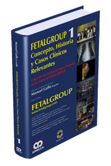

- “Leigmioma Gástrico: Diagnóstico por Imágenes”. Presentado en el Segundo Simposio Nacional de Ecografía Abdominal.
- Evaluación del “Error Diagnóstico en la Ecografía de Abdomen Superior”. En colaboración, Presentado en la Primera Reunión annual de la Asociación Argentina de Ecografía ( 8 de diciembre de 1982).
- “Halagos Ecográficos del Engrosamiento de la pared vesicular en la hepatitis viral”: presentado en el Congreso Argentino y Latinoamericano de la ultrasonografía en Medicina. ( Cap. Fed. 1983).
- “Estudio Preliminar acerca del enfoque clínico y ecográfico sobre mioma y embarazo”, presentado el 5-11-86 en la Sociedad de Obstetricia y Ginecología de Mar del Plata.
- “Evaluación de errores diagnósticos de la ecografía Ginecológica” , presentado en la Primera Reunión Nacional annual de la Sociedad Argentina de Ecografía, dic. 1982.
- “Diagnóstico de edad gestacional mediante ultrasonido”, presentado el 3-7-79 en Sociedad de Obstetrica y Ginecología de Mar del Plata.
- “Ecografía y Cirugía de Vias Biliares”, “Confrontación Diagnóstica”, presentado en las XXIII Jornadas Argentinas de Radiología y IX Jornadas Rioplatenses de Radiología, nov. de 1980.
- “Embarazo ectópico, diagnóstico ecográfico”, presentado en las VI Jornadas Marplatenses de Tocoginecología, nov. 1980.
- “Edad gestacional Ecográfica: Estudio comparativo, nuestra experiencia” , Reunión Internacional de Tocoginecología. XV Aniversario Segba. Junio 1980.
- “Metrorragia del 1er. Trimestre. Aspecto ecográfico”, presentado en las VI Jornadas Marplatenses de Obstetricia y Ginecología, dic. 1980.
- “Efectos Biológicos del U.S. Diagnóstico”.
- Co-autor en el libro "FETALGROUP 1 - Concepto, Historia y
Casos Clínicos Relevantes Colección de Medicina Fetal y Perinatal -
Serie especial Fetalgroup" (ISBN: 978-958-755-069-6), caso clínico
número 19, "Artefactos en Ecografía (masa ocupante en el cerebro fetal) "
